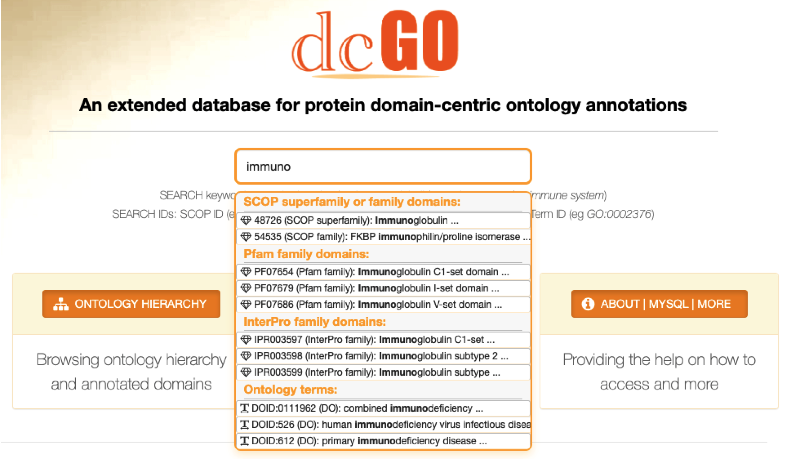

Section 4 Faceted Search
The faceted search is a mining hub, providing hyperlinks from the search results. In addition to identifiers, full text query is also supported for protein domains and ontology terms. Search results for domains are hyperlinked to domain-specific pages with the tabular display for ontology terms used to annotate them. Search results for a particular ontology terms are hyperlinked to the term-specific page, displaying the term information, annotated domains (of different levels), and where available, crosslinked terms (according to the degree of shared annotations for SCOP domains).

FIGURE 4.1: Faceted search enabling various mining opportunities of the dcGO resource, all in one go.